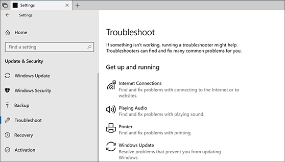

Instead of fix-it tools, Windows 10 uses troubleshooters to help you solve problems with your PC. To run a troubleshooter:
1.Select Start > Settings > Update & Security > Troubleshoot, or select the Find troubleshooters shortcut at the end of this topic.
2.Select the type of troubleshooting you want to do, then select Run the troubleshooter.
3.Allow the troubleshooter to run and then answer any questions on the screen. If you see a message that no changes or updates were necessary, you can try recovery options, or find out more about Outlook error codes and upgrade and installation error codes.